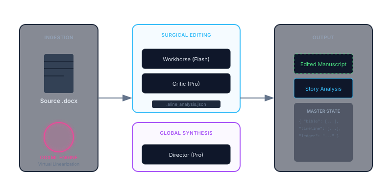

ALINE is an industrial-grade manuscript editing system built to solve the "last mile" problem of AI in publishing: ensuring that LLM-generated edits are technically perfect, contextually aware, and surgically applied to professional documents.
Capability 01
Surgical OOXML Architecture
ALINE avoids "blunt" text replacement. While the LLM provides a full paragraph rewrite (new_paragraph), the **OOXML Reconstruction Engine** performs a character-level diff against the original source. It then surgically injects <w:ins> and <w:del> tags into the XML tree. This isolates a single changed word or punctuation mark while preserving the complex formatting of the surrounding text.
// The SurgicalEdit Payload { "id": 12, // Deterministic paragraph index "paragraph_start": "Elias adjusted his glasses as", // Verification anchor (start of original para) "new_paragraph": "Elias adjusted his spectacles as the fog...", // Full paragraph rewrite "comments": ["Upgrading vocabulary for era-appropriate tone."] }
Capability 02
Agentic Command & Control
ALINE is designed for both human-in-the-loop and fully automated workflows. While a researcher can drill down into a manuscript using specific MCP tools, a full-book edit can be triggered with a single, high-level command.
This command orchestrates parallel chunking, state preservation in .aline_analysis.json, and an automated multi-pass editorial loop (Workhorse -> Critic -> Director).
Capability 03
Forensic Narrative Intelligence
Beyond surface-level grammar, ALINE performs a Forensic Narrative Audit. It tracks character attributes, critical assets, and chronological events across the entire book to identify "narrative physics" breaks. This isn't just fuzzy memory; it's a structured Master Narrative State.
// The Master Narrative State Schema { "character_bible": [{ "name": "Elias", "traits": ["limps on left leg"] }], "unified_timeline": [{ "event": "The Fog Rises", "importance": 0.9 }], "unresolved_questions": ["Who left the window open in Chapter 4?"] }
- Entity Persistence: Detects logic leaps in character attributes or asset locations.
- Pacing Heat Mapping: Visualizes narrative momentum to identify "dead zones" in the manuscript.
- Structural Radar: Analyzes the total prose DNA (Action vs. Dialogue vs. Interiority).
Capability 04
Global Narrative Synthesis
While the Surgical Loop handles the mechanics, the Director Persona performs a secondary, high-level pass. This Story Analysis orchestration synthesizes thousands of forensic observations into a cohesive editorial report, ensuring that the book's "big picture" is as polished as its individual sentences.
"The emotional payoff in the third act is slightly undermined by the lack of setup for Elias's injury. Consider seeding the 'limp' earlier in Chapter 2."
— Global Synthesis FeedbackCapability 05
Execution Profiles & Economy
To balance speed and cost, ALINE employs a multi-model strategy. Users can toggle between Production (Max Reasoning), Balanced (High Speed), and Economy (Rapid Cleanup) profiles.
| Profile | Workhorse (Edits) | Critic (Validation) | Synthesis |
|---|---|---|---|
| Production | Gemini 3 Flash | Gemini 3.1 Pro | Gemini 3.1 Pro |
| Economy | G3.1 Flash-Lite | Skipped | G3.1 Flash-Lite |
Technical Architecture Overview
ALINE is architected as a decoupled agentic system that prioritizes document integrity and narrative continuity. The system is split into two primary layers: a Python-based OOXML Engine and a TypeScript Orchestrator.

The two-phase agentic flow: Surgical Chunking and Global Synthesis.
Layer 01
The Multi-Model Editorial Pipeline
To balance high-speed throughput with deep creative reasoning, ALINE employs a tiered model strategy:
- The Workhorse (Gemini 3 Flash): Performs initial 1200-word chunking, prose styling, and granular copy-editing.
- The Critic (Gemini 3.1 Pro): Invoked for high-stakes structural revisions, validating proposed surgical patches against the author's intent.
- The Director (Gemini 3.1 Pro): Manages the "Master Narrative State," performing longitudinal synthesis and backward reconciliation to ensure a coherent editorial voice.
Layer 02
Virtual Linearization & Surgical Patching
The system avoids traditional text-replacement. Instead, it utilizes a Virtual Linearization strategy that maps paragraphs to unique identifiers. Edits are returned as SurgicalEdit objects that include anti-hallucination snippets, ensuring that the OOXML engine only modifies text that precisely matches the intended anchor.
Layer 03
Resilient State & Checkpointing
Designed for overnight batch processing, ALINE preserves the entire editorial state in a persistent .aline_analysis.json file. This allows for:
- Atomic Resumption: Seamlessly restart runs after network or API failures without re-processing chunks.
- Exponential Backoff: Intelligent retry logic to handle rate-limiting (429) or transient server errors (503).
- Backward Reconciliation: A final pass that prunes redundant comments once the global narrative profile is finalized.
Project Access
Commercial Repository Access
The ALINE repository is currently private as the system is reserved for commercial editorial workflows. For a full technical walkthrough, access to the source code, or to discuss commercial licensing, please feel free to get in touch.
Request Access via Email →